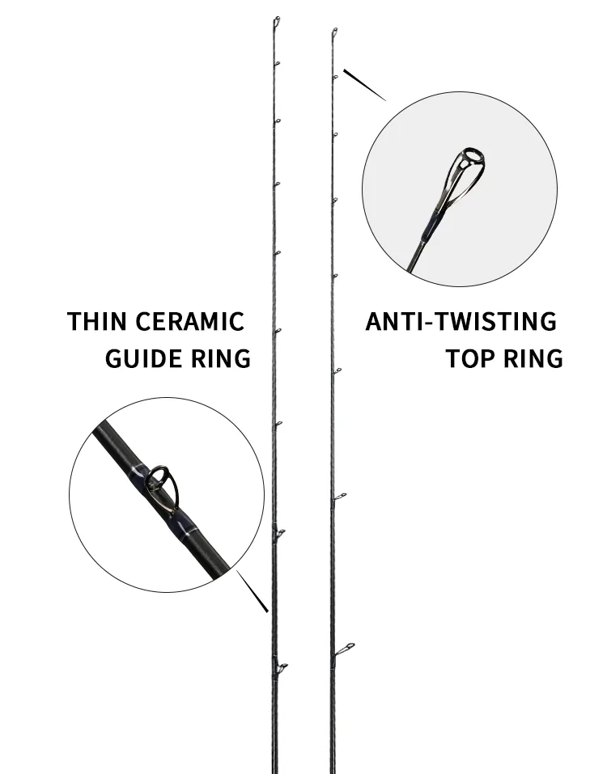
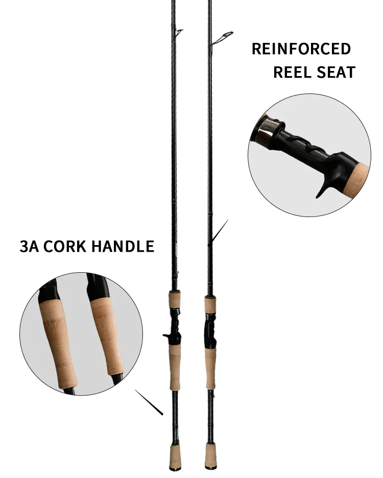
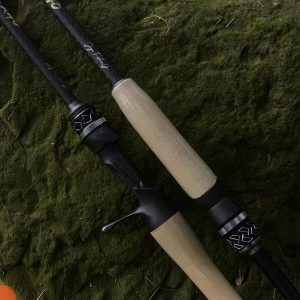
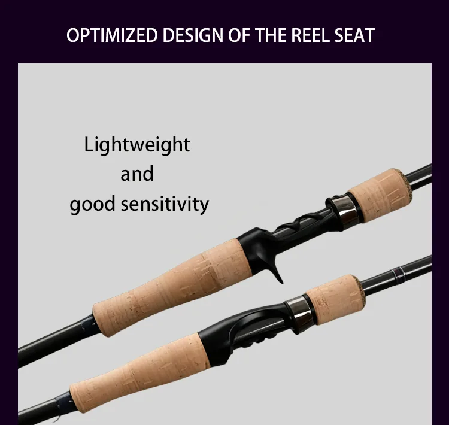
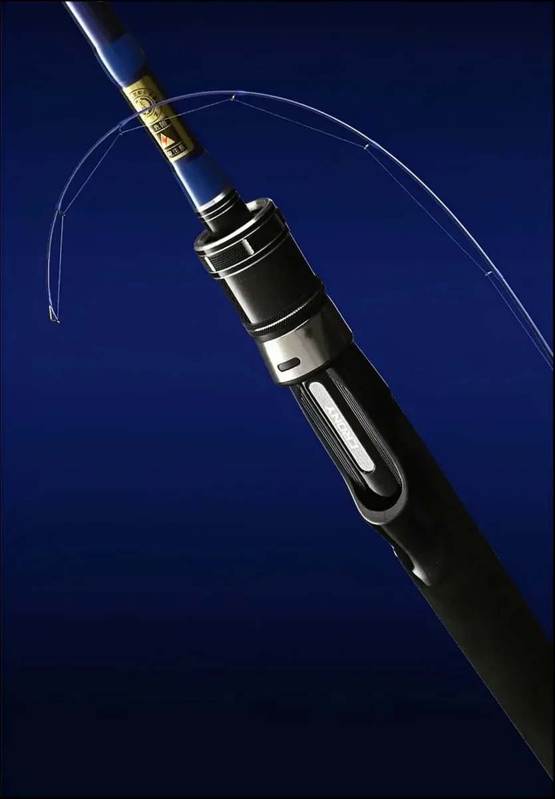

CRS721LXF
7'2" Light spinning rod — 4–10 lb
Length2.19 m (7'2")
Power / actionLight / Fast
Line rating4–10 lb
Cast weight3–10 g
Rod weight100 g
Sections1
HandleCork
Reel typeSpinning reel
Spinning and casting rods are the volume workhorse of every tackle program — and the category where Weihai's supply chain is deepest. Our partner lines roll 24T+ carbon blanks for freshwater bass and perch fishing, estuary flathead and bream work, and light inshore species. Australian and Japanese buyers account for the largest share of this program, and the blanks below are proven in those markets.
Who fishes them: weekend bass anglers on lakes and rivers, estuary anglers targeting flathead and bream with soft plastics, and light-tackle inshore anglers chasing jacks and small trevally. One-piece blanks with fast tapers for sensitivity; casting variants with reinforced reel seats for baitcasting reels.
Factory Reference Gallery
Product, detail and application photos from our Weihai partner factory floor. Click any image to enlarge.





Need a different length, action, guide train or private-label finish? Every rod below can be re-specced.
These are the rods currently tooled on our Weihai lines. Pick one and the builder opens with its real measurements already filled in — length, power, line rating, reel type and handle — and you change only what you want to change.
7'2" Light spinning rod — 4–10 lb
7'3" Medium-Light spinning rod — 6–12 lb
7'4" Medium spinning rod — 8–17 lb
7'5" Medium-Heavy spinning rod — 10–20 lb
7'2" Medium baitcasting rod — 8–14 lb
7'4" Medium-Heavy baitcasting rod — 8–17 lb
7'6" Extra-Heavy baitcasting rod — 10–25 lb
Real production data from current Weihai tooling. Any model can be customized — treat these as the starting point of your own program.
| Model | Length | Closed Length | Sections | Weight | Action / Power | Tip / Butt Dia. | Line Rating | Handle | Carbon Grade |
|---|---|---|---|---|---|---|---|---|---|
| CRS721LXF | 2.19 m (7'2") | 2.19 m | 1 | 100 g | Light / Fast | 1.7 / 11.1 mm | 4–10 lb | Cork | — |
| CRS731MLF | 2.21 m (7'3") | 2.21 m | 1 | 108 g | Medium-Light / Fast | 1.8 / 11.5 mm | 6–12 lb | Cork | — |
| CRS741MF | 2.23 m (7'4") | 2.23 m | 1 | 105 g | Medium / Fast | 1.9 / 11.5 mm | 8–17 lb | Cork | — |
| CRS751MHF | 2.26 m (7'5") | 2.26 m | 1 | 131 g | Medium-Heavy / Fast | 1.8 / 12.0 mm | 10–20 lb | Cork | — |
| CRC721MF (cast) | 2.19 m (7'2") | 2.19 m | 1 | 119 g | Medium / Fast | 1.7 / 11.6 mm | 8–14 lb | Cork | — |
| CRC741MHF (cast) | 2.23 m (7'4") | 2.23 m | 1 | 126 g | Medium-Heavy / Fast | 1.8 / 12.0 mm | 8–17 lb | Cork | — |
| CRC761XH (cast) | 2.29 m (7'6") | 2.29 m | 1 | 135 g | Extra-Heavy / Fast | 2.3 / 12.7 mm | 10–25 lb | Cork | — |
MOQ 300 pcs per model (500 for kits) · Sample lead time 20 days · Production lead time 45 days after sample approval. Custom length, action, components and branding available on request.
Under the China–Australia FTA, fishing tackle enters Australia duty-free, and sea freight from Weihai to major Australian ports runs 15–20 days. For Japanese buyers we build tighter-taper JDM-style blanks with lighter guide trains. MOQ 300 pieces per model keeps first programs manageable; mixed-model containers are welcome.
MOQ 300 pcs per model (500 for kits) · Sample lead time 20 days · Production lead time 45 days after sample approval. Custom length, action, components and branding available on request. Choose carbon grade, guide train, reel seat, handle and packaging in the configurator — you will have a quotable specification in about two minutes.
These light and mid-weight rods are already tooled on our Weihai partner lines: bass and lure casting rods, trout and stream blanks, fly rods and telescopic travel rods. Pick any model as your starting point — we apply your brand logo, colour wrap and retail packaging. No new tooling is required for a standard OEM run.


Want a length, power or component change on any of these? Every model can be re-specced.
Add us on WeChat for fast answers on OEM rod programs (GMT+8).
Or email wangyan@entrol.com